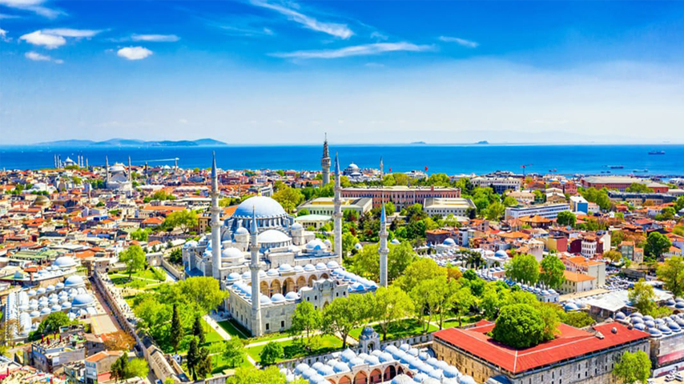

-
Каппадокія
Каппадокія — це унікальний регіон, відомий своїми незвичайними скельними утвореннями, печерами та історичними церквами. Обов’язково спробуйте політ на повітряній кулі, щоб насолодитися захоплюючими краєвидами на світанку. Крім того, ви можете дослідити підземні міста, такі як Дерінкуй, та насолодитися традиційною турецькою кухнею в місцевих ресторанах.
-

Стамбул
Стамбул — це місто, яке поєднує в собі стародавню історію та сучасний стиль. Обов’язково відвідайте Собор Святого Софії, Блакитну мечеть та палац Топкапи. Не забудьте прогулятися по Великому базару, де можна знайти безліч сувенірів, спецій та турецьких делікатесів. Стамбул також славиться своєю чудовою кухнею — спробуйте кебаби, мезе та солодощі, такі як баклава.
-

Анталія
Анталія — це популярний курорт на середземноморському узбережжі, відомий своїми прекрасними пляжами, кристально чистим морем та історичними пам'ятками. Відвідайте старе місто Калеїчі з його вузькими вуличками та мальовничими будівлями. Крім того, можете насолодитися пляжним відпочинком на пляжах Лара чи Коньяалті, а також дослідити природні чудеса, такі як водоспад Дюден.